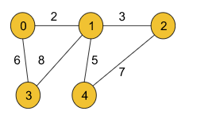

Prim's Algorithm - Minimum Spanning Tree - C++ and Java: G-45
Problem Statement: Given a weighted, undirected, and connected graph of V vertices and E edges. The task is to find the sum of weights of the edges of the Minimum Spanning Tree. (Sometimes it may be asked to find the MST as well, where in the MST the edge-informations will be stored in the form {u, v}(u = starting node, v = ending node).)
Example 1:
Input Format:
V = 5, edges = { {0, 1, 2}, {0, 3, 6}, {1, 2, 3}, {1, 3, 8}, {1, 4, 5}, {4, 2, 7}}
Result: 16
Explanation:
The minimum spanning tree for the given graph is drawn below:
MST = {(0, 1), (0, 3), (1, 2), (1, 4)}
In our previous article, we discussed what a minimum spanning tree is. Now it’s time to discuss Prim’s algorithm which will help us to find the minimum spanning tree for a given graph.
Approach:
In order to implement Prim’s algorithm, we will be requiring an array(visited array) and a priority queue that will essentially represent a min-heap. We need another array(MST) as well if we wish to store the edge information of the minimum spanning tree.
The algorithm steps are as follows:
Priority Queue(Min Heap): The priority queue will be storing the pairs (edge weight, node). We can start from any given node. Here we are going to start from node 0 and so we will initialize the priority queue with (0, 0). If we wish to store the mst of the graph, the priority queue should instead store the triplets (edge weight, adjacent node, parent node) and in that case, we will initialize with (0, 0, -1).
Visited array: All the nodes will be initially marked as unvisited.
sum variable: It will be initialized with 0 and we wish that it will store the sum of the edge weights finally.
MST array(optional): If we wish to store the minimum spanning tree(MST) of the graph, we need this array. This will store the edge information as a pair of starting and ending nodes of a particular edge.
We will first push edge weight 0, node value 0, and parent -1 as a triplet into the priority queue to start the algorithm. Note:We can start from any node of our choice. Here we have chosen node 0.
Then the top-most element (element with minimum edge weight as it is the min-heap we are using) of the priority queue is popped out.
After that, we will check whether the popped-out node is visited or not. If the node is visited: We will continue to the next element of the priority queue. If the node is not visited: We will mark the node visited in the visited array and add the edge weight to the sum variable. If we wish to store the mst, we should insert the parent node and the current node into the mst array as a pair in this step.
Now, we will iterate on all the unvisited adjacent nodes of the current node and will store each of their information in the specified triplet format i.e. (edge weight, node value, and parent node) in the priority queue.
We will repeat steps 2, 3, and 4 using a loop until the priority queue becomes empty.
Finally, the sum variable should store the sum of all the edge weights of the minimum spanning tree.
Note: Points to remember if we do not wish to store the mst(minimum spanning tree) for the graph and are only concerned about the sum of all the edge weights of the minimum spanning tree:
First of all, we will not use the triplet format instead, we will just use the pair in the format of (edge weight, node value). Basically, we do not need the parent node.
In step 3, we need not store anything in the mst array and we need not even use the mst array in our whole algorithm as well.
Intuition:
The intuition of this algorithm is the greedy technique used for every node. If we carefully observe, for every node, we are greedily selecting its unvisited adjacent node with the minimum edge weight(as the priority queue here is a min-heap and the topmost element is the node with the minimum edge weight). Doing so for every node, we can get the sum of all the edge weights of the minimum spanning tree and the spanning tree itself(if we wish to) as well.
Note: If you wish to see the dry run of the above approach, you can watch the video attached to this article.
Code:
#include <bits/stdc++.h>
using namespace std;
class Solution
{
public:
//Function to find sum of weights of edges of the Minimum Spanning Tree.
int spanningTree(int V, vector<vector<int>> adj[])
{
priority_queue<pair<int, int>,
vector<pair<int, int> >, greater<pair<int, int>>> pq;
vector<int> vis(V, 0);
// {wt, node}
pq.push({0, 0});
int sum = 0;
while (!pq.empty()) {
auto it = pq.top();
pq.pop();
int node = it.second;
int wt = it.first;
if (vis[node] == 1) continue;
// add it to the mst
vis[node] = 1;
sum += wt;
for (auto it : adj[node]) {
int adjNode = it[0];
int edW = it[1];
if (!vis[adjNode]) {
pq.push({edW, adjNode});
}
}
}
return sum;
}
};
int main() {
int V = 5;
vector<vector<int>> edges = {{0, 1, 2}, {0, 2, 1}, {1, 2, 1}, {2, 3, 2}, {3, 4, 1}, {4, 2, 2}};
vector<vector<int>> adj[V];
for (auto it : edges) {
vector<int> tmp(2);
tmp[0] = it[1];
tmp[1] = it[2];
adj[it[0]].push_back(tmp);
tmp[0] = it[0];
tmp[1] = it[2];
adj[it[1]].push_back(tmp);
}
Solution obj;
int sum = obj.spanningTree(V, adj);
cout << "The sum of all the edge weights: " << sum << endl;
return 0;
}
Output: The sum of all the edge weights: 5
Time Complexity: O(E*logE) + O(E*logE)~ O(E*logE), where E = no. of given edges. The maximum size of the priority queue can be E so after at most E iterations the priority queue will be empty and the loop will end. Inside the loop, there is a pop operation that will take logE time. This will result in the first O(E*logE) time complexity. Now, inside that loop, for every node, we need to traverse all its adjacent nodes where the number of nodes can be at most E. If we find any node unvisited, we will perform a push operation and for that, we need a logE time complexity. So this will result in the second O(E*logE).
Space Complexity: O(E) + O(V), where E = no. of edges and V = no. of vertices. O(E) occurs due to the size of the priority queue and O(V) due to the visited array. If we wish to get the mst, we need an extra O(V-1) space to store the edges of the most.
import java.util.*;
// User function Template for Java
class Pair {
int node;
int distance;
public Pair(int distance, int node) {
this.node = node;
this.distance = distance;
}
}
class Solution {
//Function to find sum of weights of edges of the Minimum Spanning Tree.
static int spanningTree(int V,
ArrayList<ArrayList<ArrayList<Integer>>> adj) {
PriorityQueue<Pair> pq =
new PriorityQueue<Pair>((x, y) -> x.distance - y.distance);
int[] vis = new int[V];
// {wt, node}
pq.add(new Pair(0, 0));
int sum = 0;
while (pq.size() > 0) {
int wt = pq.peek().distance;
int node = pq.peek().node;
pq.remove();
if (vis[node] == 1) continue;
// add it to the mst
vis[node] = 1;
sum += wt;
for (int i = 0; i < adj.get(node).size(); i++) {
int edW = adj.get(node).get(i).get(1);
int adjNode = adj.get(node).get(i).get(0);
if (vis[adjNode] == 0) {
pq.add(new Pair(edW, adjNode));
}
}
}
return sum;
}
}
public class tUf {
public static void main(String[] args) {
int V = 5;
ArrayList<ArrayList<ArrayList<Integer>>> adj = new ArrayList<ArrayList<ArrayList<Integer>>>();
int[][] edges = {{0, 1, 2}, {0, 2, 1}, {1, 2, 1}, {2, 3, 2}, {3, 4, 1}, {4, 2, 2}};
for (int i = 0; i < V; i++) {
adj.add(new ArrayList<ArrayList<Integer>>());
}
for (int i = 0; i < 6; i++) {
int u = edges[i][0];
int v = edges[i][1];
int w = edges[i][2];
ArrayList<Integer> tmp1 = new ArrayList<Integer>();
ArrayList<Integer> tmp2 = new ArrayList<Integer>();
tmp1.add(v);
tmp1.add(w);
tmp2.add(u);
tmp2.add(w);
adj.get(u).add(tmp1);
adj.get(v).add(tmp2);
}
Solution obj = new Solution();
int sum = obj.spanningTree(V, adj);
System.out.println("The sum of all the edge weights: " + sum);
}
}
Output: The sum of all the edge weights: 5
Time Complexity: O(E*logE) + O(E*logE)~ O(E*logE), where E = no. of given edges. The maximum size of the priority queue can be E so after at most E iterations the priority queue will be empty and the loop will end. Inside the loop, there is a pop operation that will take logE time. This will result in the first O(E*logE) time complexity. Now, inside that loop, for every node, we need to traverse all its adjacent nodes where the number of nodes can be at most E. If we find any node unvisited, we will perform a push operation and for that, we need a logE time complexity. So this will result in the second O(E*logE).
Space Complexity: O(E) + O(V), where E = no. of edges and V = no. of vertices. O(E) occurs due to the size of the priority queue and O(V) due to the visited array. If we wish to get the mst, we need an extra O(V-1) space to store the edges of the most.
Special thanks to KRITIDIPTA GHOSH for contributing to this article on takeUforward. If you also wish to share your knowledge with the takeUforward fam, please check out this article. If you want to suggest any improvement/correction in this article please mail us at write4tuf@gmail.com